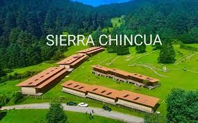
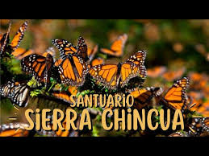
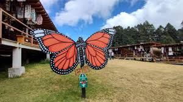

En Angangueo Michoacán
Existe La sierra Chincua consiste en una reserva especial de la biosfera, santuario natural y ancestral de la mariposa monarca en el Estado mexicano de Michoacán. Su tamaño es de alrededor de 1060 hectáreas. La gente de Chíncua,al igual que la Mariposa Monarca, también emigra hacia los mismos destinos y también regresa a pasar el invierno a la Sierra.



"Visita Michoacán"
"Visita Angangueo"
"Visita La Sierra Chincua"